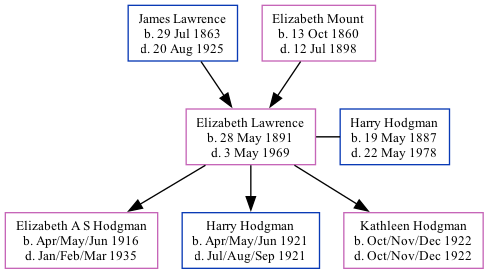

Elizabeth Annie Hodgman (née Lawrence) 1891 - 1969
[ Home ] | [ Calendar ] | [ Surnames Index ] | [ Family History ]The daughter of James Lawrence (an agricultural laborer) and Elizabeth Mount (a domestic servant), Elizabeth Lawrence, the great-aunt of <a href="I1.html">Nigel Horne</a>, was born in St Lawrence, Thanet, Kent, England on May 28, 1891<span class="citation">1,2,3,4,5</span>, was baptized there on Jun 28, 1891 and married Harry Hodgman (a farm houseman with whom she had 3 children: <a href="I357.html">Elizabeth A S</a>, <a href="I359.html">Harry J</a> and <a href="I358.html">Kathleen C</a>) in Thanet, Kent, England around Feb 1915<span class="citation">8</span>.</p><p>Elizabeth spent all of her life in Kent, England. Throughout her life, she lived in several places around the county: in Staple on Mar 31, 1901<span class="citation">9</span>; at Oast Cottages, Cleve, Monkton on Apr 2, 1911<span class="citation">10</span>; at Hoaden Cottages, Ash on Sep 29, 1939<span class="citation">2</span>; and at 89 The Street, Ash in 1969. <p>She died on May 3, 1969 in Canterbury, Kent<span class="citation">4,6,7</span> and was buried at Saint Nicholas Churchyard, Ash, Kent after May 3, 1969.
Parents
- James was born on Jul 29, 1863
- Elizabeth Ann was born on Oct 13, 1860
Children
- Elizabeth A S was born in Apr/may/jun 1916
- Harry J was born in Apr/may/jun 1921
- Kathleen C was born in Oct/nov/dec 1922
Citations
- 1901 England Census Online publication - Provo, UT, USA: The Generations Network, Inc., 2005.Original data - Census Returns of England and Wales, 1901. Kew, Surrey, England: The National Archives of the UK (TNA): Public Record Office (PRO), 1901. Data imaged from the National
- 1939 Register - Findmypast (was the wife of the head of the household)
- England & Wales deaths 1837-2007 - Findmypast
- England & Wales, Death Index: 1984-2005 Online publication - Provo, UT, USA: The Generations Network, Inc., 2007.Original data - General Register Office. England and Wales Civil Registration Indexes. London, England: General Register Office. © Crown copyright. Published by permission of the Cont
- England & Wales, FreeBMD Birth Index, 1837-1915 Online publication - Provo, UT, USA: The Generations Network, Inc., 2006.Original data - General Register Office. England and Wales Civil Registration Indexes. London, England: General Register Office. © Crown copyright. Published by permission of the Cont
- England & Wales Government Probate Death Index 1858-2019 - Findmypast
- England Billion Graves cemetery index - Findmypast
- England & Wales Marriages 1837-2005 - Findmypast
- 1901 England, Wales & Scotland Census - Findmypast (was age 9 and the daughter of the head of the household)
- 1911 Census for England & Wales - Findmypast (was age 20 and the daughter of the head of the household)
Media
Elizabeth Lawrence - Harry Hodgman

Elizabeth Annie Lawrence - probate
Elizabeth Annie Lawrence - gravestone

England & Wales births 1837-2006 - BMD/B/1891/2/AZ/000366/314
England & Wales deaths 1837-2007 - BMD/D/1969/2/AZ/000532/136
1939 Register Transcription - TNA-R39-1819-1819C-010-16
England Billion Graves cemetery index - US/BMD/BILLION/009905257
1939 Register Transcription - TNA-R39-1819-1819C-010-15
England & Wales Marriages 1837-2005 - BMD-M-1915-1-AZ-000535-021
1911 Census For England & Wales - GBC-1911-RG14-04477-0177-3
Kent Baptisms - GBPRS/CANT/B/96405808
England & Wales Government Probate Death Index 1858-2019 - GBOR/GOVPROBATE/C/1969-1969/00105704
Family Tree
Generated by Ged2Site. Last updated on Jul 20, 2025